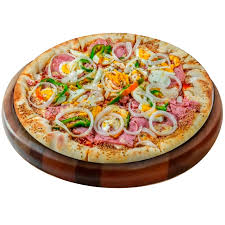
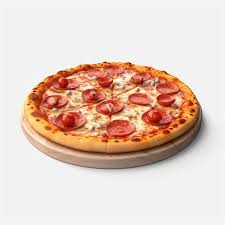
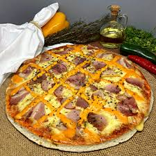
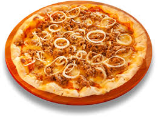

Sobre nós
A Pizza Delícia nasceu do sonho de criar uma pizzaria que combinasse a autenticidade das receitas tradicionais com um toque especial de inovação. Fundada por apaixonados pela arte de fazer pizzas, a empresa começou em uma pequena cozinha e rapidamente conquistou clientes pela qualidade e sabor dos ingredientes frescos. O compromisso com o frescor e a escolha de ingredientes de alta qualidade sempre foram o foco, estabelecendo uma relação de confiança com os clientes desde o início.
Nosso Cardápio
-
Pizza Calabresa
Deliciosa pizza com rodelas de calabresa, cebola e um toque de orégano. 
-
Pizza Marguerita
Clássica com molho de tomate, mussarela derretida e folhas frescas de manjericão. 
-
Pizza Quatro Queijos
Mistura irresistível de mussarela, gorgonzola, parmesão e provolone. 
-
Pizza Portuguesa
Com presunto, ovos, cebola, pimentão e azeitonas, uma explosão de sabores.  -
Pizza Frango com Catupiry
Combinação de frango desfiado e cremoso catupiry, perfeita para quem ama sabor suave. 
-
Pizza Pepperoni
Tradicional pizza com fatias de pepperoni e mussarela, com toque picante.  -
Pizza Vegetariana
Recheada com legumes frescos, como tomate, pimentão, cebola e azeitonas. 
-
Pizza Bacon com Cheddar
Crocante bacon com queijo cheddar derretido, perfeita para os amantes de sabores intensos.  -
Pizza de Atum
Atum combinado com cebola e azeitonas para um sabor leve e refinado. 
Acesse nossa página de pedidos:
Página de Pedidos